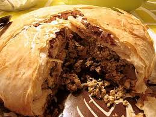

pastilla recipe
main menu

Therepastilla (orbastellain Moroccan Arabic)is an iconic and refined dish of Moroccan cuisine, renowned for its subtle blend of sweet and savory flavors as well as for the contrast between its crispy puff pastry and its meltingly soft filling
ingrediants
- 1 whole chicken cut into pieces
- 2-3 large onions
- 4-5 eggs
- Olive oil and butter
- 1 teaspoon of ground ginger,
1 teaspoon of turmeric (or saffron powder),
1/2 teaspoon of ground cinnamon,
A few strands of saffron (optional),
Salt and black pepper to taste
- 250-300 g of whole almonds,
Orange blossom water,
2-3 tablespoons of icing sugar,
1 teaspoon of ground cinnamon,
Frying oil for almonds
- 1 pack of warqa sheets (approximately 10-12 sheets),
Melted butter (for brushing the leaves),
1 beaten egg (to seal the pastilla),
Icing sugar (for final decoration),
Ground cinnamon (for final decoration)
instructions
Part 1: Preparing the chicken and egg stuffing
1 Cook the Chicken :
- In a large casserole dish or Dutch oven, heat the olive oil and butter (or ghee) over medium heat. Add the chopped onions and garlic and sauté until softened (about 10 minutes).
- Add the chicken pieces and brown on all sides
- Incorporate the spices (ginger, turmeric, ground cinnamon, saffron threads, salt, pepper), chopped parsley and coriander. Stir to coat the chicken well.
- Pour enough water or stock to cover the chicken. Bring to a boil, then reduce heat, cover and simmer for about 45 minutes to 1 hour, until the chicken is very tender.
2 Shred the Chicken :
- Remove the chicken from the pot and let it cool. Once cooled, remove the skin and bones, then shred the meat into small pieces. Set aside.
3 Prepare the Egg Filling :
- While the chicken cools, reduce the remaining cooking liquid in the pot over high heat until it thickens and almost all the liquid has evaporated (about 10-15 minutes). Remove the cinnamon stick.
- Reduce the heat to medium-low. Add the beaten eggs to the reduced sauce, stirring constantly until the eggs cook and form a creamy consistency, like scrambled eggs.
- Remove from heat and drain the mixture if necessary to avoid a soggy pastilla. Let it cool completely.
- Stir the shredded chicken into the egg and onion mixture. Season to taste.
Part 2: Preparing the filling
Toast and Chop the Almonds:
- Blanch the almonds (if they are not already blanched).
- Let them cool, then roughly (or finely) crush them.
- In a bowl, mix the crushed almonds with the icing sugar and ground cinnamon. Add a touch of orange blossom water if desired.
Part 3: Assembly and Baking
1 Preheat the oven :
- Preheat the oven to 180°C (350°F)
Assembling the Pastilla:
- Generously butter a round baking dish (approximately 28 cm in diameter) or a baking tray with sides.
- Arrange 5 to 6 sheets of warqa (or brick/filo), overlapping them and letting the edges hang well over the edge of the dish. Brush each sheet with melted butter as you assemble.
- Spread half of the chicken-egg mixture evenly over the pastry base.
- Add one or two sheets of buttered pastry on top to create a barrier.
- Spread the almond mixture over this layer.
- Add another sheet of buttered pastry, then the rest of the chicken-egg mixture.
- Fold the overhanging edges of the pastry sheets towards the center, brushing them with melted butter to seal the pastilla.
- Cover the pastilla with the remaining sheets of pastry, tucking them under the base to create a neat shape. Generously brush the top with melted butter and a little beaten egg for a beautiful golden finish.
3 Cook :
- Bake for 25 to 30 minutes, or until the pastilla is golden brown and crispy.
4 Serve :
- Allow to cool slightly. Sprinkle the top with icing sugar and decorate with streaks of ground cinnamon just before serving warm.